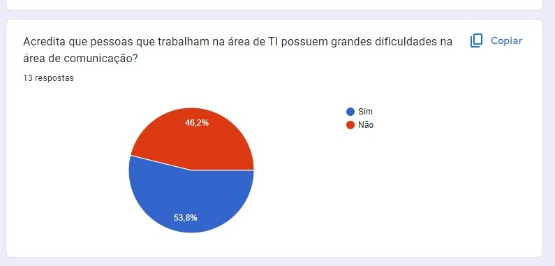

O robô McQueen tem o objetivo de entender a dificuldade das empresas em fazer com que os funcionários façam certas transições de area de maneira leve e de fácil entendimento. O objetivo principal do robô MCQUEEN é fazer que empresas utilizem a nossa maneira de transacionar assim, funcionários aprenderão a entender isso confeccionando um robô e fazendo uma disputa lúdica entre qual é o melhor robô possam praticar atividades importantes adaptavas para cada area de transição. de maneira lúdica. Além disso, a equipe Rust-eze estará 100% disponível para apresentar nosso produto da melhor forma se adaptando a cada necessidade da empresa.
Assim como vemos no gráficos acima, muitas pessoas da area de TI apresentam interessem em entender e praticar atividades robóticas e a maioria delas já estão no mercado de trabalho porem é muito difícil que esse interesse seja exercitado pela imprensa por falta de preparadores que possam estar disponíveis 100% do tempo para iniciar essa mudança positiva de carreira.
De acordo com os dados da nossa pesquisa sobre o nosso projeto, podemos observar que a maioria das pessoas entre 20 a 30 anos concordam que grande parte das pessoas que atuam na área de T.I possuem grande dificuldade na área de comunicação, como podemos observar no gráfico abaixo:
O nosso projeto vem com base entrar na área de transição de carreira, fazendo com que as pessoas construam um robô em trabalho em equipe como teste de aprovação para a transição de área. Esse projeto além de ajudar as pessoas a conseguiram uma melhor comunicação, ajuda com o trabalho em equipe que é um pré-requisito muito importante para qualquer trabalho nos dias atuais.
O nosso robô além de ajudar no trabalho em equipe, falta de comunicação, estará sendo utilizado na parte da robótica educacional que é o ponto principal do nosso robô e com base nos dados da nossa pesquisa, abaixo
Muitas pessoas não praticam, mas possuem vontade de praticar a robótica educacional, assim, se tornando algo atrativo e interessante para as pessoas fazerem quando quiserem fazer a transição de carreira sem passar por estresses desnecessários e de uma forma tranquila e iterativa.
Assim, conseguimos ver que o que falta no mercado, é a falta de investimento de empresas nesse serviço justamente pela falta de profissionais especializados nessa transição de carreiras.
Abaixo apresentamos alguns de nossos números e o porque é tão positivo fazer parte dessa nossa familia cheia de parceiros que estarão lhe apoiando em todas as suas sugestões e te estimulando a não desistir de aprender coisas novas e de te tornar um profissional não somente bom e sim excelente.
De acordo com os números tirados do IBGE (link da pesquisa), possuem pessoas entre 20 e 30 anos em São Paulo que possuem grande interesse na transição de área. Observando a pesquisa do G1 atualmente aproximadamente em São Paulo possuem 23.000.000 de pessoas com essa faixa etária de 20 à 30 anos e se pensarmos em pelo menos 5% deles necessitando dessa transição de área(150.000 pessoas aproximadamente), podemos ver que teriamos um grande público a se cuidar. Se supormos que cada empresa tenha 75 funcionários teriamos inicialmente 2000 empresas que necessitam de nosso produto!Em ainda assim pensando baixo, conseguiriamos atingir pelo menos 20.000.000 iniciais para investirmos em melhores e mais atualizadas práticas de transição e pesquisas de aprimoramento de negócios com o objetivo de fornecer ao seu funcionário o melhor serviço possível.
Se quiser entender melhor, clique no link abaixo!
Clique aqui